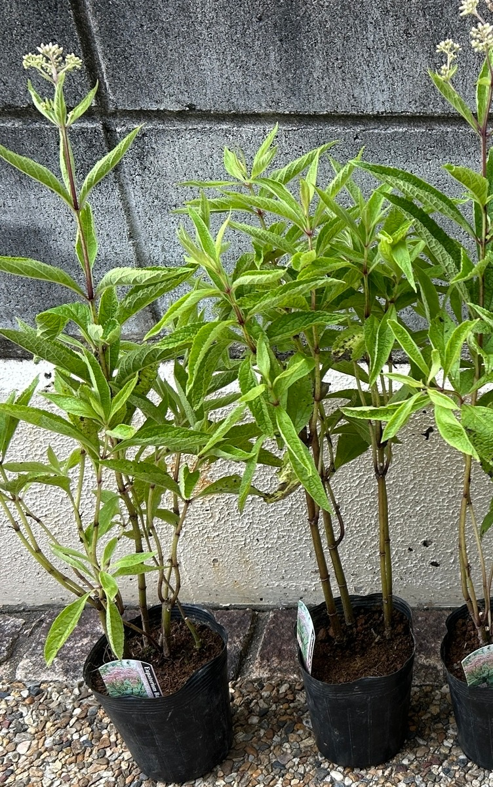
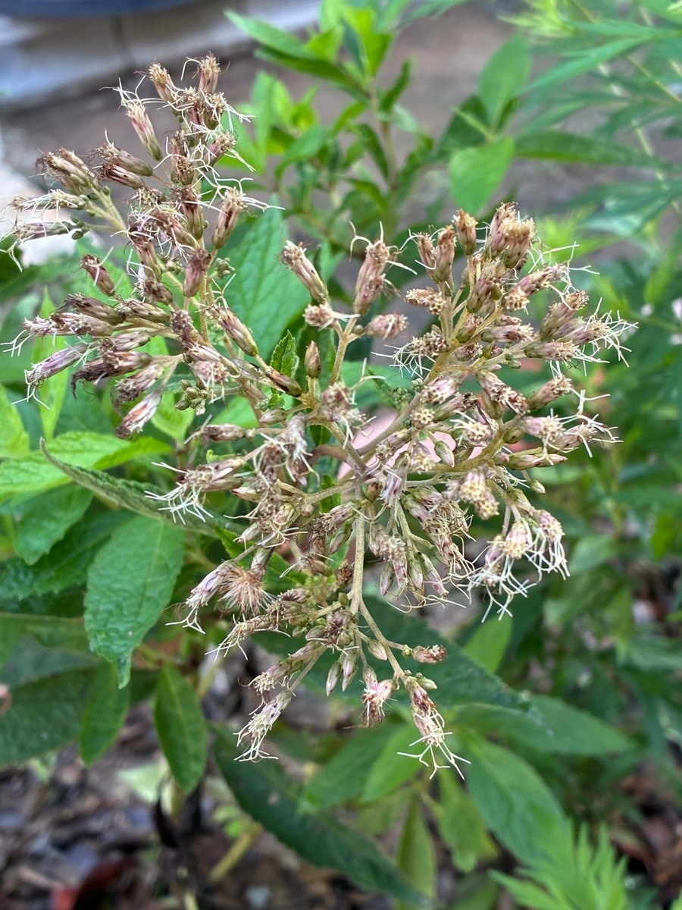

2025/08/09 5ポットの苗を植え付け
ベイビージョーの苗を5ポット購入し、庭に植え付けました。購入時から茎はしっかり伸び、葉もよく茂っていました。5株のうち3株には合計4房の花房があり、蕾から花が開き始める段階でした。ここから、わが家での生育記録を始めました。

2025/08/30 ナミアゲハが花を訪れる
ベイビージョーが咲き始めると、ナミアゲハが毎日のように蜜を吸いに訪れるようになりました。植え付けから約3週間で、花を咲かせ、蝶が訪れる姿を見ることができました。ベイビージョーが庭の蜜源のひとつになったことも、この年の大切な記録です。

2025/09/20 最初の花が終わり、新しい葉が成長
植え付けから約1か月と10日。購入時と比べて株全体が一回り大きくなり、新しい葉も増えました。茎は太くしっかりしていましたが、急激に大きくなったという印象ではありません。購入時から咲いていた花はほぼ終わりを迎え、9月20日の時点では新たな蕾を確認できませんでした。

2025年は、花房のある5ポットを植え付けたところから始まり、開花した花にはナミアゲハが訪れました。その後、最初の花が終わる頃にも株は一回り大きくなり、新しい葉を増やしていました。9月20日が、現在の親ページにある2025年最後の記録です。
0 件